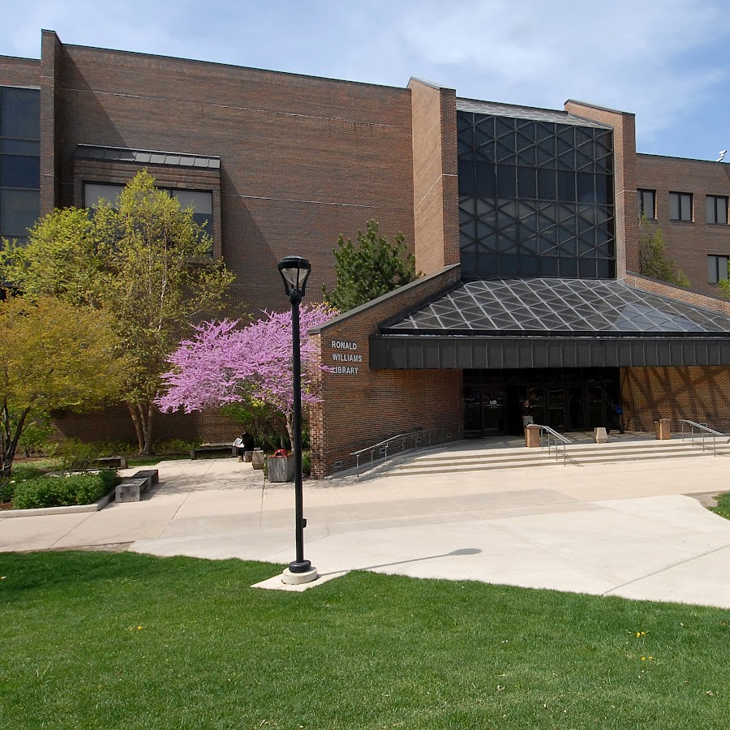
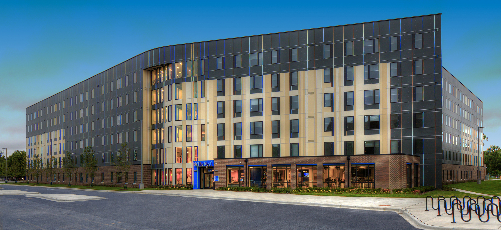
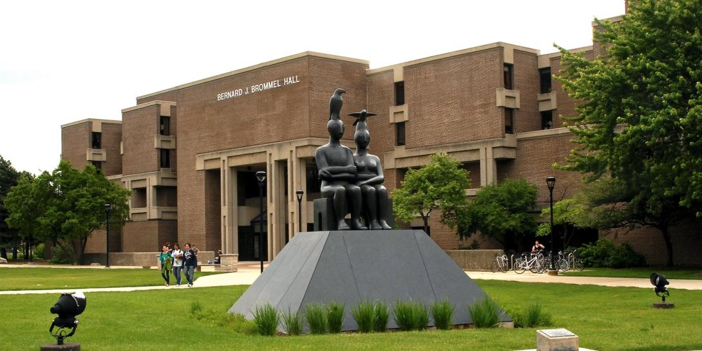
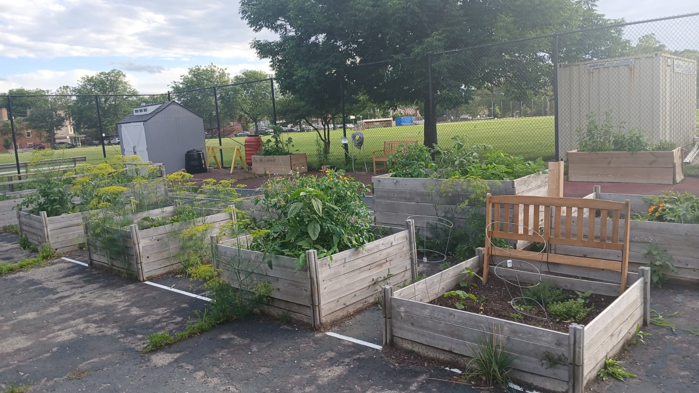

<!DOCTYPE html>
<html>
    <head>
        <title>NEIU Main Campus Points of Interest</title>

         <link rel="stylesheet" href="https://unpkg.com/leaflet@1.9.4/dist/leaflet.css"
           integrity="sha256-p4NxAoJBhIIN+hmNHrzRCf9tD/miZyoHS5obTRR9BMY="
           crossorigin=""/>

         <script src="https://unpkg.com/leaflet@1.9.4/dist/leaflet.js"
           integrity="sha256-20nQCchB9co0qIjJZRGuk2/Z9VM+kNiyxNV1lvTlZBo="
           crossorigin=""></script>
		   
		   
<style type="text/css">
  html, body { margin: 0; padding: 0; height: 100%; }
  #map { min-height: 100%; }
</style>

    </head>

    <body>
        <div id="map" style="height: 500px"></div>

        <script type="text/javascript">

          var map = L.map('map', {
              center: [41.97914, -87.72079],
              zoom: 15          });

    var canvas = L.tileLayer('https://server.arcgisonline.com/ArcGIS/rest/services/World_Street_Map/MapServer/tile/{z}/{y}/{x}', {
    attribution: 'Powered by <a href="https://www.esri.com">Esri</a> | Sources: Esri, HERE, Garmin, USGS, Intermap, INCREMENT P, NRCan, Esri Japan, METI, Esri China (Hong Kong), Esri Korea, Esri (Thailand), NGCC, &copy; OpenStreetMap contributors, and the GIS User Community',
    maxZoom: 18,
    minZoom: 4
}).addTo(map);

var imagery  =  L.tileLayer('https://server.arcgisonline.com/ArcGIS/rest/services/World_Imagery/MapServer/tile/{z}/{y}/{x}', {
	attribution: 'Tiles &copy; Esri &mdash; Source: Esri, i-cubed, USDA, USGS, AEX, GeoEye, Getmapping, Aerogrid, IGN, IGP, UPR-EGP, and the GIS User Community',
	maxZoom: 18,
    minZoom: 4
});

var basemaps = {
    "Street Map": canvas,
    "World Imagery": imagery
};

L.control.layers(basemaps).addTo(map);
			
			var pointIcon = L.icon({
				iconUrl: 'point.png', // url that links to the icon image file, saved in the same folder as the current page 
				iconSize:     [38, 38], // size of the icon image in pixels
				iconAnchor:   [19, 19], // the top left corner of the icon will be aligned so that this point is at the marker's geographical location
				popupAnchor:  [0, -10] // point from which the popup should open, relative to the iconAnchor 
				});
				
			
          var WZRD = L.marker([41.981729, -87.718577], {icon: pointIcon, alt: 'WZRD'}).addTo(map);
		  
		  var Library = L.marker([41.98034, -87.71918], {icon: pointIcon, alt: 'Library'}).addTo(map);
		  
		  var Housing = L.marker([41.979664, -87.719833], {icon: pointIcon, alt: 'The Nest'}).addTo(map);
		  
		  var BBH = L.marker([41.980441, -87.716957], {icon: pointIcon, alt: 'BBH'}).addTo(map);
		  
		  var garden = L.marker([41.976745, -87.716464], {icon: pointIcon, alt: 'Garden'}).addTo(map);
		  
var pic1 = '';
var pic2 = '';
var pic3 = '';
var pic4 = '';
var pic5 = '';

WZRD.bindPopup('<p style="color:black; font-weight:bold"> <h3> Campus Radio Station </h3> 88.3FM <br> Located in Student Union </p>' + pic1);
Library.bindPopup('<p style="color:black; font-weight:bold"> <h3> Ronald Williams Library </h3> Monday - Thursday, 8 a.m. to 9 p.m. <br> Friday, 8 a.m. to 6 p.m. <br> Saturday, 9 a.m. to 5 p.m. <br> Sunday, Noon to 8 p.m.</p>' + pic2);
Housing.bindPopup('<p style="color:black; font-weight:bold"> <h3> The Nest </h3> Campus Housing </p>' + pic3);
BBH.bindPopup ('<p style="color:black; font-weight:bold"> <h3> Bernard J. Brommel Hall </h3> Science Building </p>' + pic4);
garden.bindPopup ('<p style="color:black; font-weight:bold"> <h3> Green Conservation Club </h3> Campus Garden <br> Located in the Tennis Courts </p>' + pic5);
        </script>
   </body>
</html>
